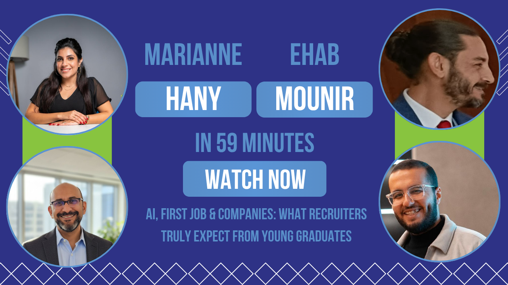

Major Project Case Studies
Project 1: Job Fair Marketing
Objective:
To increase awareness and engagement for the UFE WorX Job Fair.
Tasks:
- Creating promotional content
- Writing captions
- Supporting communication with students
- Organizing event-related content
My Contribution:
I helped prepare and publish marketing content that promoted the event and encouraged student participation.
Skills Gained:

Project 2: YouTube Channel Development
Objective:
To support the creation and organization of the UFE WorX YouTube channel.
Tasks:
- Creating video titles and descriptions
- Designing thumbnails
- Organizing timelines and chapters
- Supporting channel branding
My Contribution:
I contributed to making the channel more organized, professional, and user-friendly.
Skills Gained:


Project 3: Social Media Campaigns
Objective:
To promote events, opportunities, and educational initiatives.
Tasks:
- Content planning
- Scheduling posts
- Publishing content
- Monitoring engagement
My Contribution:
I helped maintain a consistent online presence and support the visibility of UFE WorX activities.
Skills Gained: